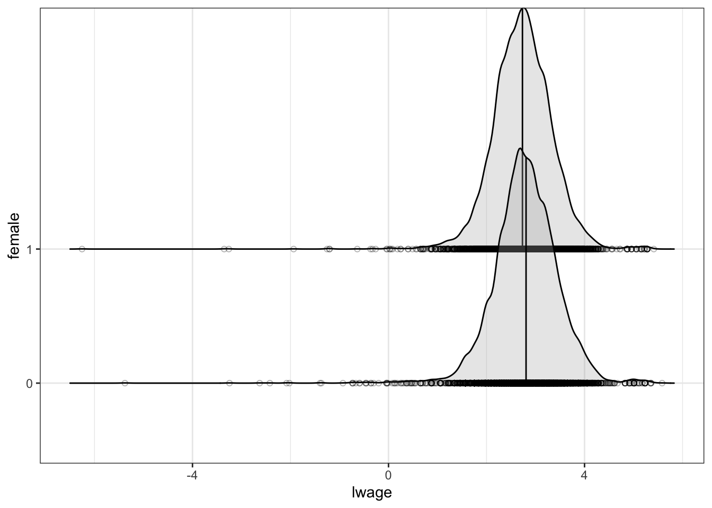
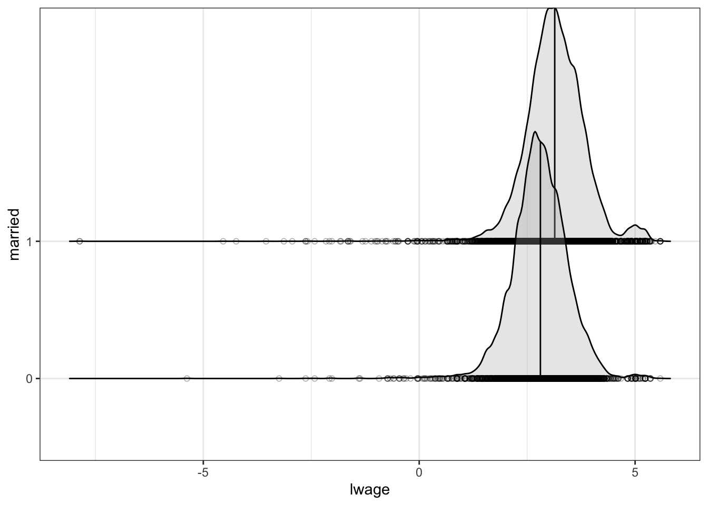

Linear Regression Model – Lecture
Menghan Yuan
Oct 2, 2024
One-way ANOVA test
ANOVA stands for “analysis of variance”. We use \(F\)-test for one-way ANOVA to test whether the regression equation as a whole is significant.
Variance decomposition
Consider the following model setting:
\[ y_i = x_{1i} \beta_1 + x_{2i} \beta_2 + \cdots + x_{Ki} \beta_K + \varepsilon_i\, , \] where \(\varepsilon_i \overset{iid}{\sim} N(0, \sigma^2)\) and \(x_{1i}=1\) for \(i=1,\ldots,n\).
Total Sum of Squares (TSS) \[ \text{TSS} = \sum_{i=1}^n (y_i-\overline{y})^2, \] where \(\overline{y}=\frac{1}{n} \sum_{i=1}^n y_i\)
Explained/Model Sum of Squares (ESS or MSS) \[ \text{ESS} = \sum_{i=1}^n (\hat{y}_i-\overline{y})^2 \]
Residual sum of squares \[ \text{RSS} = \sum_{i=1}^n (y_i-\hat{y}_i)^2 \]
\(TSS = ESS + RSS\), that is \[ \sum_{i=1}^n (y_i-\overline{y})^2 = \sum_{i=1}^n (\hat{y}_i-\overline{y})^2 + \sum_{i=1}^n (y_i-\hat{y}_i)^2 . \] Dividing both sides by \(\sum_{i=1}^n (y_i-\overline{y})^2\) gives \[ 1 = \frac{\sum_{i=1}^n (\hat{y}_i-\overline{y})^2}{\sum_{i=1}^n (y_i-\overline{y})^2} - \frac{\sum_{i=1}^n (y_i-\hat{y}_i)^2}{\sum_{i=1}^n (y_i-\overline{y})^2} . \] Define \(\color{#008B45FF}{R^2=\frac{\sum_{i=1}^n (\hat{y}_i-\overline{y})^2}{\sum_{i=1}^n (y_i-\overline{y})^2}}\), which is the ratio of \(ESS\) to \(TSS\). Rearranging the equation, we have \[ \begin{aligned} R^2 &= 1-\frac{\sum_{i=1}^n (y_i-\hat{y}_i)^2}{\sum_{i=1}^n (y_i-\overline{y})^2} \\ &= 1-\frac{RSS}{TSS} \\ &= \frac{ESS}{TSS}. \end{aligned} \]
Note that
- \(R^2\) is called “the coefficient of determination”.
- \(0\le R^2\le 1\), is a measure of goodness of fit.
- \(R^2=1\) (perfit fit) occurs when \(y=\hat{y}\).
- \(R^2=0\) occurs when there is only one intercept in the model, i.e., \(y_i=\beta_1+\varepsilon\). The predicted value will be the sample average. \(\hat{y}_i=\overline{y}\) for \(i=1,2,\ldots,n,\) so that \(ESS = \sum_{i=1}^n (\hat{y}_i-\overline{y})^2=0.\)
- \(R^2\) is the square of the sample correlation coefficient between \(y_i\) and \(\hat{y}_i\).
- \(R^2\) measures the proportion of the total variation in the dependent variable that is “accounted for” or “explained” by the model.
Note that in a sample of size \(n\), we could always obtain a perfect fit (\(R^2 = 1\)) simply by regressing \(y_i\) on a set of \(n\) linearly independent explanatory variables.
More generally, increasing the number of explanatory variables cannot reduce the fit as measured by \(R^2\).
Adding an explanatory variable that is irrelevant in the sample (s.t. the estimated coe¢cient on this variable is zero) leaves the fit unchanged.
While adding a variable that is not irrelevant in the sample (s.t. the estimated coefficient is not zero) improves the fit.
Some researchers prefer to report an “adjusted \(R^2\)” or “R-bar-squared”, defined by \[ \overline{R}^2 = 1- \frac{n-1}{n-K}(1-R^2) , \] which imposes a penalty as \(K\) increases in a given sample size \(n\).
F-test for that all \(K-1\) of the slope coefficients in a linear model are equal to zero, i.e., to test the exclusion of all explanatory variables except the intercept, \(\beta_1\). Formally speaking. \[ \begin{aligned} &\text{H}_0: \beta_2=\beta_3=\cdots=\beta_K=0 \\ &\text{H}_1: \text{At least one of the } \beta_2, \beta_3,\ldots, \beta_K,\text{is not zero.} \end{aligned} \] This is sometimes referred to as the F-test for one-way ANOVA.
The test statistic is given by: \[ F = \left(\frac{n-K}{K-1}\right) \left(\frac{R^2}{1-R^2}\right) \sim F(K-1, n-K) . \]
where \(F\) is \(F\)-distributed with \(K-1\) and \(n-K\) degrees of freedom.
We reject \(\text{H}_0\) if \(F>F_{\alpha}(K-1,n-K)\).
- \(F_{\alpha}(K-1,n-K)\) is the \((1-\alpha)\) percentile in the \(F(K-1, n-K)\) distribution, corresponding to the level of significance, \(\alpha\).
The $p$-value is found by:
$$
\text{P-value} = \mathbb{P}(F>F_{\text{obs}}) ,
$$
where $F_{\text{obs}}$ is your calcualted/observed test statistic based on your data sample.
- Large values of $F$ give evidence against the validity of the null hypothesis. Note that a large $F$ is induced by a large value of $R^2$.
- The logic of the test is that the $F$ statistic is a measure of the loss of fit (namely, all of $R^2$) that results when we impose the restriction that all the slopes are zero. If $F$ is large, then the hypothesis is rejected.T-test for the effect of a single predictor
Quite often it is not very interesting to test the null hypothesis that none of the covariates have an effect. T-test is used to test for if one specific covariate, \(\beta_j, j=1,\ldots,K,\) has an effect. \[ \begin{aligned} &\text{H}_0: \beta_j=0 , \\ &\text{H}_1: \beta_j\ne0 . \end{aligned} \]
We use the following statistic \[ t = \frac{\hat{\beta}_j-\beta_j}{se_{\hat{\beta}_j}} \sim t(n-K) . \] We reject \(\text{H}_0\) if \(|t|>c_{\alpha/2}\), where \(c_{\alpha/2}\) is the \(\left(1-\frac{\alpha}{2}\right)\) quantile of the \(t\)-distribution with \(n-K\) degrees of freedom.
The two-sided \(p\)-value is found by: \[ \begin{aligned} p\text{-value} &= 2\,\mathbb{P}(T>|t|) \\ &= 2\left(1-\mathbb{P}(T\le|t|)\right) , \end{aligned} \] where \(T\) is \(t\)-distribution with \(n-K\) degrees of freedom.
The \((1-\alpha)\) confidence interval for \(\beta_j\): \[ [\hat{\beta}_j-c_{\alpha/2} \cdot se_{\hat{\beta}_j}, \hat{\beta}_j+c_{\alpha/2} \cdot se_{\hat{\beta}_j}] . \]
Note that the t-distribution approximates to a standard normal distribution when the degrees of freedom are high. In practice, people often use the critical values of the standard normal distribution for simplification.
Dummy variables
Dummy variables are useful to represent categorical predictors. For example, we usually set the variable woman as a dummy variable that only takes the values \(\{0,1\}\). \[ x_{1} = \begin{cases} 1 & \text{ if sex=woman} \\ 0 & \text{ otherwise} \end{cases} . \]
- We call the level where \(x_1=0\) as the reference level.
Given this notation we can formulate the regression model that involves a single dummy variable \(x_1\): \[ y_i = \beta_0 + \beta_1 x_{1,i} + \varepsilon_i . \] In this example,
the intercept \(\beta_0\) is equal to the conditional mean of \(y_i\) for the \(x_{1,i}=0\) subpopulation (men).
the slope \(\beta_1\) is equal to the difference in the conditional means between \(x_{1,i}=1\) (women) and \(x_{1,i}=0\) (men).
More than two categories
When there are several categories, a set of binary variables is necessary. For instance, a quarter variable can take four categories.
\[ quarter = \begin{cases} \text{1st quarter} \\ \text{2nd quarter} \\ \text{3rd quarter} \\ \text{4th quarter} \end{cases} \] Let’s write a consumption function for quarterly data as \[ y_t = \beta_1 + \beta_2 x_t + \delta_1 D_{t1} + \delta_{2} D_{t2} + \delta_3 D_{t3} + \varepsilon_t , \] where \(x_t\) is disposable income, and
\[\begin{aligned} D_{t1} &= \begin{cases} 1 & t \text{ is in the 1st quarter} \\ 0 & \text{otherwise} \\ \end{cases} \\ D_{t2} &= \begin{cases} 1 & t \text{ is in the 2nd quarter} \\ 0 & \text{otherwise} \\ \end{cases} \; . \\ D_{t3} &= \begin{cases} 1 & t \text{ is in the 3rd quarter} \\ 0 & \text{otherwise} \\ \end{cases} \end{aligned}\]Here we used 4th quarter as the base period. Any of the four quarters can be used as the base period.
Note that only three of the four quarterly dummy variables are included in the model. If the fourth were included, then the four dummy variables would sum to one at every observation, which would reproduce the constant term—a case of perfect multicollinearity.
Bone density example
We considered a study of bone mineral density (in g/cm\(^2\)) for rats given isoflavone and for rats in a control group. We want to test if isoflavone have an effect on bone mineral density.
# load dataset
bonedensity <- read_csv("https://raw.githubusercontent.com/my1396/course_dataset/refs/heads/main/bonedensity.csv")
bonedensityWe formulate as the following equation: \[ y = \beta_0 + \beta_1x_1 + \varepsilon , \] where \(x_1\) is a dummy variable indicating control/treatment groups. \[ x_1 = \begin{cases} 1 & \text{ if group=2 (treatment)} \\ 0 & \text{ if group=1 (control/reference)} \end{cases} . \] Let \(\mu_1\) be the expected outcome in the reference group and \(\mu_2\) be the expected outcome in the treatment group. That is \[ E(y|x_1) = \begin{cases} \mu_0 & \text{ if group=1} \\ \mu_1 & \text{ if group=2} \\ \end{cases} . \] This indicates \[ \begin{aligned} \beta_0 &= \mu_0\, , \\ \beta_1 &= \mu_1-\mu_0 \,. \end{aligned} \]
Run the regression.
# define group to be a categorical covariate (factor)
bonedensity <- bonedensity %>% mutate(group = factor(group))
bonedensity## # A tibble: 30 × 2
## density group
## <dbl> <fct>
## 1 0.228 1
## 2 0.207 1
## 3 0.234 1
## 4 0.22 1
## 5 0.217 1
## 6 0.228 1
## 7 0.209 1
## 8 0.221 1
## 9 0.204 1
## 10 0.22 1
## # ℹ 20 more rowslm.density <- lm(density~group,data=bonedensity)
summary(lm.density)##
## Call:
## lm(formula = density ~ group, data = bonedensity)
##
## Residuals:
## Min 1Q Median 3Q Max
## -0.029067 -0.011367 -0.000367 0.009733 0.031933
##
## Coefficients:
## Estimate Std. Error t value Pr(>|t|)
## (Intercept) 0.218867 0.004027 54.343 < 2e-16 ***
## group2 0.016200 0.005696 2.844 0.00823 **
## ---
## Signif. codes: 0 '***' 0.001 '**' 0.01 '*' 0.05 '.' 0.1 ' ' 1
##
## Residual standard error: 0.0156 on 28 degrees of freedom
## Multiple R-squared: 0.2242, Adjusted R-squared: 0.1964
## F-statistic: 8.09 on 1 and 28 DF, p-value: 0.008227Summarize the output in a regression table.
| Dependent variable: | |
| density | |
| group2 | 0.016*** |
| (0.006) | |
| Constant | 0.219*** |
| (0.004) | |
| Observations | 30 |
| R2 | 0.224 |
| Adjusted R2 | 0.196 |
| Residual Std. Error | 0.016 (df = 28) |
| F Statistic | 8.090*** (df = 1; 28) |
| Note: | ***: p<0.01; **: p<0.05; *: p<0.1 |
- The intercept (0.219) is the mean bone density in group 1 (the reference group).
- The slope estimate for group2 (0.016) is the difference between the means of bone density in the two groups.
- The \(t\)-value (2.844) and p-value (0.00823) equals the \(t\)-test. Given that the p-value is smaller than 5%, we conclude that the treatment of isoflavone has significant effect on the bone density of rats.
Visualize the distribution of the two groups – Box plots.
Box plot statistics:
- extreme of the lower whisker: minimum
- the lower hinge: first quartile or 25th percentile
- the median
- the upper hinge: third quartile or 75th percentile, and
- the extreme of the upper whisker: maximum
boxplot(density~group, data=bonedensity)
T-test for equal population means
We would like to determine a confidence interval for the treatment effect and test if the difference is statistically significant – \(t\)-test for equal population means.
t.test(density~group, data=bonedensity, var.equal=T)##
## Two Sample t-test
##
## data: density by group
## t = -2.8442, df = 28, p-value = 0.008227
## alternative hypothesis: true difference in means between group 1 and group 2 is not equal to 0
## 95 percent confidence interval:
## -0.027867161 -0.004532839
## sample estimates:
## mean in group 1 mean in group 2
## 0.2188667 0.2350667Mathematical formulations
The two-sample t-test is used to test for the difference in two population means, \(\mu_1-\mu_2\).
Suppose we wish to compare the means of two distinct populations. Figure 1 illustrates the conceptual framework of our investigation in this and the next section. Each population has a mean (\(\mu\)) and a standard deviation (\(\sigma\)).
We draw a random sample from Population 1 and label the sample statistics it yields with the subscript 1. Particularly, we have sample mean \((\overline{x}_1)\) and sample standard deviation \((s_1)\).
We draw a sample from Population 2 and label its sample statistics with the subscript 2. Particularly, we have sample mean \((\overline{x}_1)\) and sample standard deviation \((s_1)\).
Our goal is to use the information in the samples to estimate the difference in the means of the two populations, \(\mu_1-\mu_2\), and to make statistically valid inferences about it.

Fig. 1: T-test of Two Population Means
Equal Population Variances
Suppose that the data for the two independent groups are random samples from \(N(\mu_1, \sigma_1^2)\) and \(N(\mu_2, \sigma_2^2)\), respectively. Here we assume equal population variances, \(\sigma_1^2=\sigma_2^2\).
The observations are denotes:
- group 1: \(x_{11}, x_{12}, \ldots, x_{1,n_1}\)
- group 2: \(x_{21}, x_{22}, \ldots, x_{2,n_2}\)
We have all together \(n=n_1+n_2\) observations.
\[ \text{H}_0: \mu_1 - \mu_2 =0 \quad \text{(or equivalently } H_0: \mu_1 = \mu_2) \] Against any of the alternative hypotheses:
\[ \begin{aligned} & \text{Two-tailed: } && \text{H}_1: \mu_1 - \mu_2 \ne 0, \\ & \text{Left-tailed: } && \text{H}_1: \mu_1 - \mu_2<0, \; \text{or }\; \\ & \text{Right-tailed: } && \text{H}_1: \mu_1 - \mu_2>0\, . \end{aligned} \]
Test statistic: \[ t = \frac{\overline{x_1}-\overline{x_2}}{se(\overline{x_1}-\overline{x_2})} \sim t(n_1+n_2-2) , \] which follows a t-distribution with \((n_1+n_2-2)\) degrees of freedom, where \[ se(\overline{x_1}-\overline{x_2}) = s_p\sqrt{\left(\frac{1}{n_1}+\frac{1}{n_2}\right)} \] with \[ s_p = \sqrt{\frac{n_1-1}{n_1+n_2-2}\cdot s_1^2 + \frac{n_2-1}{n_1+n_2-2}\cdot s_2^2} \,. \] where \(s_p^2\) is called the pooled sample variance. It is a weighted average of the two sample variances \(s_1^2\) and \(s_2^2\).
\[ \begin{aligned} s_1^2 &= \frac{\sum_{i=1}^{n_1}(x_i-\overline{x}_1)^2}{n_1-1} \\ s_2^2 &= \frac{\sum_{i=1}^{n_2}(x_i-\overline{x}_1)^2}{n_2-1} \\ \end{aligned} \] where \(\overline{x}_1\) and \(\overline{x}_2\) are the sample means.
The following are rejection regions corresponding to various alternative hypotheses.
| Alternative Hypothesis | Rejection Region |
|---|---|
| \(\text{H}_1: \mu_1 - \mu_2 \ne 0\) | \(\vert t\vert > t_{\alpha/2,\, v}\) |
| \(\text{H}_1: \mu_1 - \mu_2<0\) | \(t<-t_{ \alpha,\, v}\) |
| \(\text{H}_1: \mu_1 - \mu_2> 0\) | \(t > t_{\alpha,\, v}\) |
where \(v=n_1+n_2-2\) is the degrees of freedom.
The t-test under equal population variances is also known as the “pooled two-sample t-test”.
The \((1-\alpha)\) (two-sided) confidence interval is given by:
\[ (\overline{x_1}-\overline{x_2})\pm t_{\alpha/2, v} \cdot se(\overline{x_1}-\overline{x_2}) \,. \]
When Population Variances Are Not Equal
Let’s assume we have two independent samples from two normal distributions with unequal variances, \(\sigma_1^2\ne\sigma_2^2\).
Then we have the following test statistic:
\[ t = \frac{\overline{x_1}-\overline{x_2}}{se(\overline{x_1}-\overline{x_2})} \sim t(r) , \] which follows a t-distribution with the adjusted degrees of freedom \(r\), where \[ se(\overline{x_1}-\overline{x_2}) = \sqrt{\frac{s_1^2}{n_1}+\frac{s_2^2}{n_2}} \, , \] and \[ r=\frac{\left(\frac{s_1^2}{n_1}+\frac{s_2^2}{n_2}\right)^2}{\frac{(s_1^2/n_1)^2}{n_1-1} + \frac{(s_2^2/n_2)^2}{n_2-1}} \] If \(r\) does not equal an integer, as it usually does not, then we take the integer portion of \(r\). That is, we use \(\lfloor r \rfloor\) if necessary.
The t-test under unequal population variances is also known as the “Welch’s t-test”.
Note that when each sample size is large, for instance, \(n_1\geq 30\) and \(n_2\geq 30\), the test statistic approximate the standard normal distribution. Then we could use the critical value under standard normal, \(z_{\alpha/2}\).
Interactions
Come back to our Current Population Survey (CPS) dataset and earnings regressions.
Now suppose we have two dummy variables \(x_1\) and \(x_2\).
\[ \begin{aligned} x_{1} &= \begin{cases} 1 & \text{ if sex=woman} \\ 0 & \text{ otherwise} \end{cases} \\ x_2 &= \begin{cases} 1 & \text{ if the person is married} \\ 0 & \text{ otherwise} \end{cases} \end{aligned} \]
We consider the following regression model: \[ y=\beta_0 + \beta_1x_1 + \beta_2x_2 + \beta_3x_1x_2 + \varepsilon . \] Here we have \(x_3=x_1x_2\), i.e., the product of \(x_1\) and \(x_2\).
- We often describe \(\beta_3\) as measuring the interaction between the two dummy variables, or the interaction effect, and describe
- \(\beta_3 = 0\) as the case when the interaction effect is zero.
The conditional mean given \(x_1\) and \(x_2\) (\(E[y|x_1,x_2]\)) takes at most four possible values:
| Scenario | \(x_1\) | \(x_2\) | \(E[y&#124;x_1,x_2]\) |
|---|---|---|---|
| 1 | 0 | 0 | \(\mu_{00}\) |
| 2 | 1 | 0 | \(\mu_{10}\) |
| 3 | 0 | 1 | \(\mu_{01}\) |
| 4 | 1 | 1 | \(\mu_{11}\) |
We want to build a relationship between the four \(\beta\)’s and the four \(\mu\)’s. Plugging in the four scenarios, we have the following system of equations: \[ \begin{cases} \beta_0 &= \mu_{00} \\ \beta_0 + \beta_1 &= \mu_{10} \\ \beta_0 + \beta_2 &= \mu_{01} \\ \beta_0 + \beta_1 + \beta_2 + \beta_3 &= \mu_{11} \\ \end{cases} . \]
Solving the system of equations gives us \[ \begin{cases} \color{#008B45FF}{\beta_0} &= \mu_{00} \\ \color{red}{\beta_1} &= \mu_{10} - \mu_{00} \\ \color{#1F77B4FF}{\beta_2} &= \mu_{01} - \mu_{00} \\ \color{#9467BDFF}{\beta_3} &= \mu_{11} - \mu_{10} - \mu_{01} + \mu_{00} \\ \end{cases} . \]
These relationships can be summarized in the following table.
| \(x_2\) | ||||
| Unmarried (\(x_2=0\)) | Married (\(x_2=1\)) | Difference | ||
| \(x_1\) | Male (\(x_1=0\)) | \(\mu_{00}=\color{#008B45FF}{\beta_0}\) | \(\mu_{01}\) | \(\mu_{01}-\mu_{00} = \color{#1F77B4FF}{\beta_2}\) |
| Female (\(x_1=1\)) | \(\mu_{10}\) | \(\mu_{11}\) | \(\mu_{11}-\mu_{10}=\color{#1F77B4FF}{\beta_2}+\color{#9467BDFF}{\beta_3}\) | |
| Difference | \(\mu_{10}-\mu_{00} = \color{red}{\beta_1}\) | \(\mu_{11}-\mu_{01} = \color{red}{\beta_1} + \color{#9467BDFF}{\beta_3}\) | ||
We can view
- the regression intercept \(\color{#008B45FF}{\beta_0}\) as the expected earnings for unmarried men;
- the coefficient \(\color{red}{\beta_1}\) as the effect of sex on expected earnings for unmarried wage earners;
- the coefficient \(\color{#1F77B4FF}{\beta_2}\) as the effect of marriage on expected earnings for men wage earners;
- the coefficient \(\color{#9467BDFF}{\beta_3}\) has two equivalent interpretations:
- \((\mu_{11} - \mu_{10}) - (\mu_{01} - \mu_{00})\) stands for difference between the effects of marriage on expected earnings among women and men, or rearranging the terms,
- \((\mu_{11} - \mu_{01}) - (\mu_{10} - \mu_{00})\) stands for difference between the effects of sex on expected earnings among married and non-married wage earners.
Back to our CPS earning regression example.
# prepare the dataset
cps_data <- read_csv("https://raw.githubusercontent.com/my1396/course_dataset/refs/heads/main/cps09mar.csv")
cps_data <- cps_data %>%
mutate(wage = earnings/(hours*week),
lwage = log(wage),
female = factor(female),
married = ifelse(marital<4, 1, 0) %>% factor()
)
cps_data %>% select(lwage, female, married)## # A tibble: 50,742 × 3
## lwage female married
## <dbl> <fct> <fct>
## 1 4.133456 0 1
## 2 3.061872 0 1
## 3 2.752786 0 1
## 4 3.117780 1 1
## 5 4.129148 0 1
## 6 2.764140 1 0
## 7 2.783240 0 1
## 8 2.783240 1 1
## 9 3.649659 0 1
## 10 2.733368 1 1
## # ℹ 50,732 more rowsdummy_lm <- lm(lwage~female+married+female:married, data=cps_data)
summary(dummy_lm)##
## Call:
## lm(formula = lwage ~ female + married + female:married, data = cps_data)
##
## Residuals:
## Min 1Q Median 3Q Max
## -11.0081 -0.3779 0.0014 0.3855 2.7890
##
## Coefficients:
## Estimate Std. Error t value Pr(>|t|)
## (Intercept) 2.794187 0.007211 387.513 < 2e-16 ***
## female1 -0.062195 0.010023 -6.205 5.51e-10 ***
## married1 0.350636 0.008510 41.205 < 2e-16 ***
## female1:married1 -0.216118 0.012422 -17.398 < 2e-16 ***
## ---
## Signif. codes: 0 '***' 0.001 '**' 0.01 '*' 0.05 '.' 0.1 ' ' 1
##
## Residual standard error: 0.6537 on 50738 degrees of freedom
## Multiple R-squared: 0.06475, Adjusted R-squared: 0.0647
## F-statistic: 1171 on 3 and 50738 DF, p-value: < 2.2e-16Summarize the output in a regression table.
| Dependent variable: | |
| lwage | |
| female1 | -0.062*** |
| (0.010) | |
| married1 | 0.351*** |
| (0.009) | |
| female1:married1 | -0.216*** |
| (0.012) | |
| Constant | 2.794*** |
| (0.007) | |
| Observations | 50,742 |
| R2 | 0.065 |
| Adjusted R2 | 0.065 |
| Residual Std. Error | 0.654 (df = 50738) |
| F Statistic | 1,170.951*** (df = 3; 50738) |
| Note: | ***: p<0.01; **: p<0.05; *: p<0.1 |
Plugging in the estimates, we write the regression model as
\[ \widehat{\log (wage)} = 2.79 - 0.06\, Female + 0.35\, Married - 0.22\, Female \times Married \] Note that we have the log transformation for the wage variable. This changes the interpretation of the coefficients. The coefficient can be interpreted as a one-unit change in the independent variable is associated with a 100 times the coefficient percent change in the (original) dependent variable.
The regression results show that
the intercept \(\color{#008B45FF}{\beta_0}\) (\(2.79\)) indicates that the expected log(wage) for unmarried men is \(2.79\);
the coefficient \(\color{red}{\beta_1}\) (\(-0.06\)) indicates that the effects of sex on expected earnings for unmarried wage earners is \(6\%\) lower.
- That is, unmarried female earn \(6\%\) less than unmarried male.
the coefficient \(\color{#1F77B4FF}{\beta_2}\) (\(0.35\)) indicates that the effects of marriage on expected earnings for males is \(35\%\).
- That is married male earns \(35\%\) more than unmarried male.
the coefficient \(\color{#9467BDFF}{\beta_3}\) (\(-0.22\)) indicates that
- \(\beta_3=(\mu_{11} - \mu_{10}) - (\mu_{01} - \mu_{00})\): difference between the effects of marriage on expected earnings among women and men.
- effects of marriage for women is \(-22\%\) less than men;
- the effects of marriage on expected earnings for females is \(11\%=(35-22)\%\);
- married females earns \(11\%\) more than unmarried females.
- \(\beta_3=(\mu_{11} - \mu_{01}) - (\mu_{10} - \mu_{00})\): difference between the effects of sex on expected earnings among married and non-married wage earners.
- effects of sex for married is \(22\%\) less than unmarried.
- the effects for sex on expected earnings for married is \(-28\%=(-6-22)\%\);
- married females earn \(28\%\) less than married males.
- \(\beta_3=(\mu_{11} - \mu_{10}) - (\mu_{01} - \mu_{00})\): difference between the effects of marriage on expected earnings among women and men.
Visualization of \(\color{red}{\beta_1}\), the effects of sex on expected earnings for unmarried wage earners.
library(ggridges)
ggplot(cps_data %>% filter(married==0), aes(x = lwage, y = female, group = female)) +
geom_density_ridges(jittered_points = TRUE,
position = position_points_jitter(height = 0),
quantile_lines=TRUE,
quantile_fun = function(x,...) median(x),
point_size = 1.5,
point_shape = 1,
alpha = 0.3) 
Visualization of \(\color{#1F77B4FF}{\beta_2}\), the effect of marriage on expected earnings for male wage earners.
ggplot(cps_data %>% filter(female==0), aes(x = lwage, y = married, group = married)) +
geom_density_ridges(jittered_points = TRUE,
position = position_points_jitter(height = 0),
quantile_lines=TRUE,
quantile_fun = function(x,...) median(x),
point_size = 1.5,
point_shape = 1,
alpha = 0.3) 
Two-way ANOVA test
The two-way ANOVA test is used to compare the fits of two regression models.
Test for Improvement: It tests whether adding more predictors (variables) to a model significantly improves the model’s ability to explain the variability in the response variable.
Model Selection: Helps in deciding between a simpler model with fewer variables and a more complex one with more variables.
When to Use ANOVA for Comparing Regression Models?
Nested Models: Applicable when you have two nested models - one is a special case of the other. For example, Model 1 might include predictors \(X_1\) and \(X_2\), while Model 2 includes \(X_1\), \(X_2\), and \(X_3\).
Same Response Variable: Both models must be trying to predict the same response variable.
Linear Models: Typically used for comparing linear regression models.
How to perform the comparison?
Fit both models: Fit the simpler model and the more complex model to your data.
Conduct ANOVA test: Use an ANOVA test to compare the models. In R, this can be done using the
anova()function.Interpret the results: If the \(p\)-value from the ANOVA test is low (typically <0.05), it suggests that the more complex model provides a significantly better fit to the data.
Mathematical formulations
For instance, consider we have two models:
- Model 1: \(y=\beta_1 + \beta_2 x_{2} + \varepsilon\), and
- Model 2: \(y=\beta_1 + \beta_2 x_{2} + \beta_3 x_3 + \beta_4 x_4 + \varepsilon\).
We can form a test by comparing the \(R^2\) from the two models.
\[ \begin{aligned} &\text{H}_0: \beta_3=\beta_4=0 \\ &\text{H}_1: \beta_3\ne 0 \text{ or } \beta_4\ne 0 , \end{aligned} \] which imposes two exclusion restrictions.
Note that this is similar to the \(F\)-test for the significance of the overall regression, which test for \[ \begin{aligned} &\text{H}_0: \beta_2=\beta_3=\cdots=\beta_K=0 \\ &\text{H}_1: \text{At least one of the } \beta_2, \beta_3,\ldots, \beta_K,\text{is not zero.} \end{aligned} \]
In stead of having a \(F(K-1, n-K)\) test statistic, we can form a \(F(p, n-K)\) test statistic, where \(p\) is the number of exclusion restrictions. In this case, we have \(p=2\).
To fix ideas, we call Model 1 as the “restricted model”, and Model 2 the “unrestricted model” or the “full model”.
Denote
- the \(R^2\) obtained from the restricted model by \(R_R^2\), and
- the \(R^2\) obtained from the unrestricted model by \(R_U^2\, .\)
- Noting that \(R_U^2 > R_R^2\).
The test statistic is given by
\[ F = \left(\frac{n-K}{p}\right) \left(\frac{R_U^2-R_R^2}{1-R_U^2}\right) \sim F(p, n-K) . \]
The null hypothesis is rejected if the exclusion of these \(p\) explanatory variables results in a sufficiently large fall in the \(R^2\) goodness of fit measure.
dummy_lm_restricted <- lm(lwage~female+married, data=cps_data)
summary(dummy_lm_restricted)##
## Call:
## lm(formula = lwage ~ female + married, data = cps_data)
##
## Residuals:
## Min 1Q Median 3Q Max
## -10.9795 -0.3814 0.0047 0.3947 2.7494
##
## Coefficients:
## Estimate Std. Error t value Pr(>|t|)
## (Intercept) 2.867008 0.005889 486.85 <2e-16 ***
## female1 -0.202913 0.005938 -34.17 <2e-16 ***
## married1 0.249212 0.006218 40.08 <2e-16 ***
## ---
## Signif. codes: 0 '***' 0.001 '**' 0.01 '*' 0.05 '.' 0.1 ' ' 1
##
## Residual standard error: 0.6556 on 50739 degrees of freedom
## Multiple R-squared: 0.05917, Adjusted R-squared: 0.05914
## F-statistic: 1596 on 2 and 50739 DF, p-value: < 2.2e-16Summarize the unrestricted and restricted models in a table.
| Dependent variable: | ||
| lwage | ||
| (1) | (2) | |
| female1 | -0.203*** | -0.062*** |
| (0.006) | (0.010) | |
| married1 | 0.249*** | 0.351*** |
| (0.006) | (0.009) | |
| female1:married1 | -0.216*** | |
| (0.012) | ||
| Constant | 2.867*** | 2.794*** |
| (0.006) | (0.007) | |
| Observations | 50,742 | 50,742 |
| R2 | 0.059 | 0.065 |
| Adjusted R2 | 0.059 | 0.065 |
| Residual Std. Error | 0.656 (df = 50739) | 0.654 (df = 50738) |
| F Statistic | 1,595.591*** (df = 2; 50739) | 1,170.951*** (df = 3; 50738) |
| Note: | ***: p<0.01; **: p<0.05; *: p<0.1 | |
Two-way Anova test
# Compare the restricted with the full model
anova(dummy_lm_restricted, dummy_lm)## Analysis of Variance Table
##
## Model 1: lwage ~ female + married
## Model 2: lwage ~ female + married + female:married
## Res.Df RSS Df Sum of Sq F Pr(>F)
## 1 50739 21808
## 2 50738 21679 1 129.33 302.7 < 2.2e-16 ***
## ---
## Signif. codes: 0 '***' 0.001 '**' 0.01 '*' 0.05 '.' 0.1 ' ' 1- The result shows a \(df\) of 1 (indicating that the unrestricted model has one additional parameter, i.e., \(p=1\)), and a very small \(p\)-value (\(< .001\)).
- This means that adding the interaction to the model did lead to a significantly improved fit over the model 1.